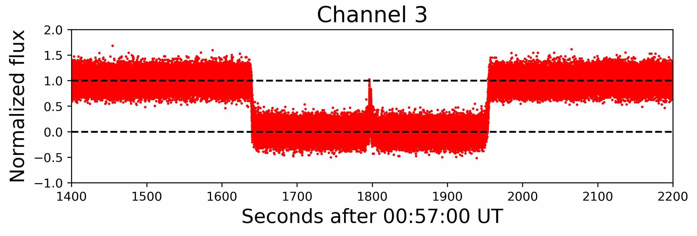

I am a second year Ph.D. student in the Department of Astronomy and a Research Assistant in the Center for Space Physics at Boston University. I work with Prof. Paul Withers at BU and Dr. Mike Person at MIT studying planetary atmospheres using stellar occultations.
I received my Bachelors in Physics & Astronomy from the University of Pennsylvania in 2018, where I worked with Prof. Gary Bernstein on trans-Neptunian objects.
I am also co-host of the new podcast astro[sound]bites, which features posts on Astrobites.org, for which I have been a contributing writer since January 2019.
Current Research
Stellar Occultations
I currently work with Prof. Paul Withers at BU and Dr. Mike Person at MIT on stellar occultations of solar system objects.
A stellar occultation is when a nearby object (such as a planet or asteroid) passes in front of a star and obstructs the starlight from view on earth. Stellar occultations are used for a number of different scientific purposes:
Determine precise locations and sizes of trans-Neptunian objects.
Discover features like rings, volcanism, or moons around minor planets.
Measure features of planetary astmospheres.
Number 1 was how stellar occultations were used to determine the shape and position of Arrokoth before New Horizons flew past it.
Number 3 is what I work on.
The fundamental question of my research is how can we use a stellar occultation by Mars to learn details about the Martian middle atmosphere? In fact, through my research, I have measured the density, temperature, and pressure of Mars' atmosphere at very high resolution, which allowed me to detect small, moving waves.

One example of an occultation light curve, normalized to 1 before and after occultation and 0 during occultation. The gradual slopes at the beginning and end of occultation, which are difficult to see by eye, provide information about the atmosphere of Mars (Saunders et al., in prep.).
How Does it Work?
As a star moves behind a planet's atmosphere, from Earth's point of view, the atmosphere acts like a giant lens, refracting the light from the star and causing it to spread out. This spreading out dims the star, creating a light curve. The red light curve is a real example from my research.
Using these light curves, we can use the rate of dimming of the star to measure the amount of "stuff" in the atmosphere that had to be present to cause it. The result is measurements of density, temperature, and pressure of the planet's atmosphere.
Temperature vs. pressure in the Martian atmosphere from stellar occultation of Mars. Note the large horizontal error bars. (Elliot et al., 1977)
The original result published in 1977 was the first atmospheric profile of Mars ever produced.
In my re-analysis of these data, I have three primary findings.
My higher-resolution results are consistent with models of the Martian atmosphere.
I detected internal gravity waves about 5 km vertical wavelength in the Martian atmosphere.
Re-analysis of archival data has singificant scientific merit.
In the 42 years between the original analysis and my re-analysis, there have been 7 Mars orbiters, 4 Mars landers, and 4 Mars rovers that have helped astronomers understand the Martian atmosphere much better. With this modern understanding and better computing techniques, I am able to confirm the reliabilty of my results and add to the understanding of the Martian atmopshere.
I presented the final results at the Winter Meeting of the American Geophysical Union in December 2019.
Past Research
Search for Trans-Neptunian Objects
As an undergraduate physics major at the University of Pennsylvania I worked with Prof. Gary Bernstein using the Dark Energy Survey to identify trans-Neptunian objects (TNOs). TNOs are any solar system body beyond the orbit of Neptune and represent everything from well-behaved Kuiper Belt objects to poorly-understood scattering objects with unusual orbits.
I developed a survey simulator that characterizes the efficiency of the TNO search being conducted with the Dark Energy Survey. This work contributed toward a recent publication in the Astronomical Journal , on which I am a co-author.
Protoplanetary Disks
Presenting my poster at AAS 231 in Washington, D.C. on Jan. 12 2018.
During the summer of 2017, I worked at NASA Ames Research Center on the formation of planetary systems with Dr. Uma Gorti. A protoplanetary disk is the dust and gas from which planetary systems form, but there is much uncertainty about how small dust grains can grow to planetessimals.
I used Uma's disk model to simulate how viscosity and photoevaporation impact the disk and found a range of parameters that allows the disk to keep enough mass to possibly form planets.
At the 231st meeting of the American Astronomical Society in January 2018, my first professional conference, I presented these findings.
Astrobites
Astrobites is a website run entirely by graduate students in astronomy and publishes daily summaries of recent astronomy publications. Astrobites is designed for undergraduate science majors to learn about the lastest work in astronomy in only a few minutes.
Some posts go beyond the traditional paper summaries, covering topics of applying for graduate school, student funding, and problems facing astronomy today. In November I published the first book review post for Astrobites, something I'm hoping becomes a new trend.
I have been writing for Astrobites since January 2019 and all my posts are available on my Astrobites page. Below are some of my recent posts.
Parts of the Astrobites website are currently down, including all my posts before July. The links below work for Internet Archives of my older posts or PDFs of the webpage.
Magma flows hundreds of thousands of years ago might account for the water on Mars, but scientists do not know if Mars could produce magma that recently.
No one knows if Planet Nine will be found, but looking for it has revealed another unusual object in our Solar System.
astro[sound]bites
I host the podcast astro[sound]bites along with Malena Rice at Yale University, and Alex Gagliano at University of Illinois Urbana Champaign. Every episode features three recent Astrobites centered around a theme in astronomy. It's Astrobites for your ears!
Working on a podcast has long been a dream of mine and I'm thrilled to be on the air. Find us on Apple Podcasts, Google Play, Spotify, and SoundCloud. We encourage listener feedback--email us at astrosoundbites@gmail.com.